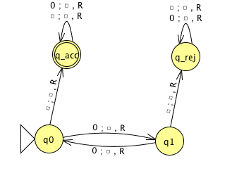
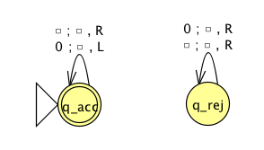
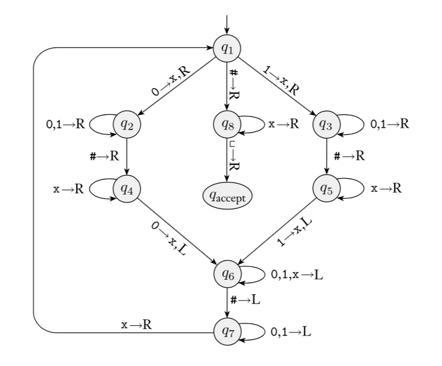
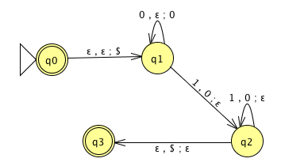
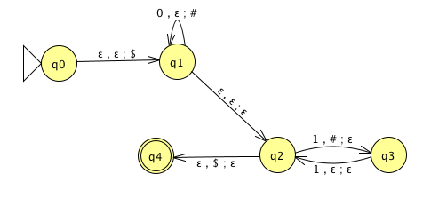
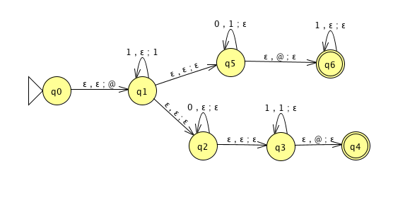

To fully specify a PDA we could give its \(6\)-tuple formal definition or we could give its input alphabet, stack alphabet, and state diagram. An informal description of a PDA is a step-by-step description of how its computations would process input strings; the reader should be able to reconstruct the state diagram or formal definition precisely from such a descripton. The informal description of a PDA can refer to some common modules or subroutines that are computable by PDAs:
PDAs can “test for emptyness of stack” without providing details. How? We can always push a special end-of-stack symbol, \(\$\), at the start, before processing any input, and then use this symbol as a flag.
PDAs can “test for end of input” without providing details. How? We can transform a PDA to one where accepting states are only those reachable when there are no more input symbols.
Big picture: PDAs were motivated by wanting to add some memory of unbounded size to NFA. How do we accomplish a similar enhancement of regular expressions to get a syntactic model that is more expressive?
DFA, NFA, PDA: Machines process one input string at a time; the computation of a machine on its input string reads the input from left to right.
Regular expressions: Syntactic descriptions of all strings that match a particular pattern; the language described by a regular expression is built up recursively according to the expression’s syntax
Context-free grammars: Rules to produce one string at a time, adding characters from the middle, beginning, or end of the final string as the derivation proceeds.
| Term | Typical symbol | Definition |
|---|---|---|
| Context-free grammar (CFG) | \(G\) | \(G = (V, \Sigma, R, S)\) |
| Variables | \(V\) | Finite set of symbols that represent phases in production pattern |
| Terminals | \(\Sigma\) | Alphabet of symbols of strings generated by CFG |
| \(V \cap \Sigma = \emptyset\) | ||
| Rules | \(R\) | Each rule is \(A \to u\) with \(A \in V\) and \(u \in (V \cup \Sigma)^*\) |
| Start variable | \(S\) | Usually on LHS of first / topmost rule |
| Derivation | Sequence of substitutions in a CFG | |
| \(S \implies \cdots \implies w\) | Start with start variable, apply one rule to one occurrence of a variable at a time | |
| Language generated by the CFG \(G\) | \(L(G)\) | \(\{ w \in \Sigma^* \mid \text{there is derivation in $G$ that ends in $w$} \} = \{ w \in \Sigma^* \mid S \implies^* w \}\) |
| Context-free language | A language that is the language generated by some CFG | |
| Sipser pages 102-103 |
Examples of context-free grammars, derivations in those grammars, and the languages generated by those grammars
\(G_1 = (\{S\}, \{0\}, R, S)\) with rules \[\begin{aligned} &S \to 0S\\ &S \to 0\\ \end{aligned}\] In \(L(G_1)\) …
Not in \(L(G_1)\) …
\(G_2 = (\{S\}, \{0,1\}, R, S)\) \[S \to 0S \mid 1S \mid \varepsilon\] In \(L(G_2)\) …
Not in \(L(G_2)\) …
\((\{S, T\}, \{0, 1\}, R, S)\) with rules \[\begin{aligned} &S \to T1T1T1T \\ &T \to 0T \mid 1T \mid \varepsilon \end{aligned}\]
In \(L(G_3)\) …
Not in \(L(G_3)\) …
\(G_4 = (\{A, B\}, \{0, 1\}, R, A)\) with rules \[A \to 0A0 \mid 0A1 \mid 1A0 \mid 1A1 \mid 1\] In \(L(G_4)\) …
Not in \(L(G_4)\) …
Extra practice: Is there a CFG \(G\) with \(L(G) = \emptyset\)?
Design a CFG to generate the language \(\{abba\}\)
\[\begin{aligned} & ( \{ S, T, V, W\}, \{a,b\}, \{ S \to aT, T \to bV, V \to bW, W \to a\}, S)\\ & \\ & \\ & \\ & ( \{ Q \}, \{a,b\}, \{Q \to abba\}, Q) \\ & \\ & \\ & \\ & ( \{ X,Y \}, \{a,b\}, \{X \to aYa, Y \to bb\}, X) & \\ & \\ \end{aligned}\]
Design a CFG to generate the language \(\{a^n b^n \mid n \geq 0\}\)
Sample derivation:
Design a CFG to generate the language \(\{a^i b^j \mid j \geq i \geq 0\}\)
Sample derivation:
Theorem 2.20: A language is generated by some context-free grammar if and only if it is recognized by some push-down automaton.
Definition: a language is called context-free if it is the language generated by a context-free grammar. The class of all context-free language over a given alphabet \(\Sigma\) is called CFL.
Consequences:
Quick proof that every regular language is context free
To prove closure of the class of context-free languages under a given operation, we can choose either of two modes of proof (via CFGs or PDAs) depending on which is easier
Over \(\Sigma = \{a,b\}\), let \(L = \{ a^n b^m \mid n \neq m \}\). Goal: Prove \(L\) is context-free.
Suppose \(L_1\) and \(L_2\) are context-free languages over \(\Sigma\). Goal: \(L_1 \cup L_2\) is also context-free.
Approach 1: with PDAs
Let \(M_1 = ( Q_1, \Sigma, \Gamma_1, \delta_1, q_1, F_1)\) and \(M_2 = ( Q_2, \Sigma, \Gamma_2, \delta_2, q_2, F_2)\) be PDAs with \(L(M_1) = L_1\) and \(L(M_2) = L_2\).
Define \(M =\)
Approach 2: with CFGs
Let \(G_1 = (V_1, \Sigma, R_1, S_1)\) and \(G_2 = (V_2, \Sigma, R_2, S_2)\) be CFGs with \(L(G_1) = L_1\) and \(L(G_2) = L_2\).
Define \(G =\)
Suppose \(L_1\) and \(L_2\) are context-free languages over \(\Sigma\). Goal: \(L_1 \circ L_2\) is also context-free.
Approach 1: with PDAs
Let \(M_1 = ( Q_1, \Sigma, \Gamma_1, \delta_1, q_1, F_1)\) and \(M_2 = ( Q_2, \Sigma, \Gamma_2, \delta_2, q_2, F_2)\) be PDAs with \(L(M_1) = L_1\) and \(L(M_2) = L_2\).
Define \(M =\)
Approach 2: with CFGs
Let \(G_1 = (V_1, \Sigma, R_1, S_1)\) and \(G_2 = (V_2, \Sigma, R_2, S_2)\) be CFGs with \(L(G_1) = L_1\) and \(L(G_2) = L_2\).
Define \(G =\)
Summary
Over a fixed alphabet \(\Sigma\), a language \(L\) is regular
iff it is described by some regular expression
iff it is recognized by some DFA
iff it is recognized by some NFA
Over a fixed alphabet \(\Sigma\), a language \(L\) is context-free
iff it is generated by some CFG
iff it is recognized by some PDA
Fact: Every regular language is a context-free language.
Fact: There are context-free languages that are not nonregular.
Fact: There are countably many regular languages.
Fact: There are countably inifnitely many context-free languages.
Consequence: Most languages are not context-free!
Examples of non-context-free languages
\[\begin{aligned} &\{ a^n b^n c^n \mid 0 \leq n , n \in \mathbb{Z}\}\\ &\{ a^i b^j c^k \mid 0 \leq i \leq j \leq k , i \in \mathbb{Z}, j \in \mathbb{Z}, k \in \mathbb{Z}\}\\ &\{ ww \mid w \in \{0,1\}^* \} \end{aligned}\] (Sipser Ex 2.36, Ex 2.37, 2.38)
There is a Pumping Lemma for CFL that can be used to prove a specific language is non-context-free: If \(A\) is a context-free language, there there is a number \(p\) where, if \(s\) is any string in \(A\) of length at least \(p\), then \(s\) may be divided into five pieces \(s = uvxyz\) where (1) for each \(i \geq 0\), \(uv^ixy^iz \in A\), (2) \(|uv|>0\), (3) \(|vxy| \leq p\). We will not go into the details of the proof or application of Pumping Lemma for CFLs this quarter.
A set \(X\) is said to be closed under an operation \(OP\) if, for any elements in \(X\), applying \(OP\) to them gives an element in \(X\).
| True/False | Closure claim |
|---|---|
| True | The set of integers is closed under multiplication. |
| \(\forall x \forall y \left( ~(x \in \mathbb{Z} \wedge y \in \mathbb{Z})\to xy \in \mathbb{Z}~\right)\) | |
| True | For each set \(A\), the power set of \(A\) is closed under intersection. |
| \(\forall A_1 \forall A_2 \left( ~(A_1 \in \mathcal{P}(A) \wedge A_2 \in \mathcal{P}(A) \in \mathbb{Z}) \to A_1 \cap A_2 \in \mathcal{P}(A)~\right)\) | |
| The class of regular languages over \(\Sigma\) is closed under complementation. | |
| The class of regular languages over \(\Sigma\) is closed under union. | |
| The class of regular languages over \(\Sigma\) is closed under intersection. | |
| The class of regular languages over \(\Sigma\) is closed under concatenation. | |
| The class of regular languages over \(\Sigma\) is closed under Kleene star. | |
| The class of context-free languages over \(\Sigma\) is closed under complementation. | |
| The class of context-free languages over \(\Sigma\) is closed under union. | |
| The class of context-free languages over \(\Sigma\) is closed under intersection. | |
| The class of context-free languages over \(\Sigma\) is closed under concatenation. | |
| The class of context-free languages over \(\Sigma\) is closed under Kleene star. | |
Assume \(\Sigma = \{0,1, \#\}\)
| \(\Sigma^*\) | Regular / nonregular and context-free / not context-free |
| \(\{0^i\# 1^j \mid i \geq 0, j \geq 0\}\) | Regular / nonregular and context-free / not context-free |
| \(\{0^i1^j\# 1^j0^i \mid i \geq 0, j \geq 0\}\) | Regular / nonregular and context-free / not context-free |
| \(\{0^i1^j\# 0^i 1^j \mid i \geq 0, j \geq 0\}\) | Regular / nonregular and context-free / not context-free |
Turing machines: unlimited read + write memory, unlimited time (computation can proceed without “consuming” input and can re-read symbols of input)
Division betweeen program (CPU, state diagram) and data
Unbounded memory gives theoretical limit to what modern computation (including PCs, supercomputers, quantum computers) can achieve
State diagram formulation is simple enough to reason about (and diagonalize against) while expressive enough to capture modern computation
For Turing machine \(M= (Q, \Sigma, \Gamma, \delta, q_0, q_{accept}, q_{reject})\) the computation of \(M\) on a string \(w\) over \(\Sigma\) is:
Read/write head starts at leftmost position on tape.
Input string is written on \(|w|\)-many leftmost cells of tape, rest of the tape cells have the blank symbol. Tape alphabet is \(\Gamma\) with \(\textvisiblespace\in \Gamma\) and \(\Sigma \subseteq \Gamma\). The blank symbol \(\textvisiblespace \notin \Sigma\).
Given current state of machine and current symbol being read at the tape head, the machine transitions to next state, writes a symbol to the current position of the tape head (overwriting existing symbol), and moves the tape head L or R (if possible). Formally, transition function is \[\delta: Q\times \Gamma \to Q \times \Gamma \times \{L, R\}\]
Computation ends if and when machine enters either the accept or the reject state. This is called halting. Note: \(q_{accept} \neq q_{reject}\).
The language recognized by the Turing machine \(M\), is \[\{ w \in \Sigma^* \mid \textrm{computation of $M$ on $w$ halts after entering the accept state}\} = \{ w \in \Sigma^* \mid w \textrm{ is accepted by } M\}\]
An example Turing machine: \(\Sigma = \phantom{\hspace{1in}}, \Gamma = \phantom{\hspace{1in}}\) \[\delta ( ( q0, 0) ) =\]

Formal definition:
Sample computation:
| \(q0\downarrow\) | ||||||
|---|---|---|---|---|---|---|
| \(0\) | \(0\) | \(0\) | \(\textvisiblespace\) | \(\textvisiblespace\) | \(\textvisiblespace\) | \(\textvisiblespace\) |
The language recognized by this machine is …
Extra practice:

Formal definition:
Sample computation:
Sipser Figure 3.10
Conventions in state diagram of TM: \(b \to R\) label means \(b \to b, R\) and all arrows missing from diagram represent transitions with output \((q_{reject}, \textvisiblespace , R)\)
2

Implementation level description of this machine:
Zig-zag across tape to corresponding positions on either side of \(\#\) to check whether the characters in these positions agree. If they do not, or if there is no \(\#\), reject. If they do, cross them off.
Once all symbols to the left of the \(\#\) are crossed off, check for any un-crossed-off symbols to the right of \(\#\); if there are any, reject; if there aren’t, accept.
Computation on input string \(01\#01\)
| \(q_1 \downarrow\) | ||||||
|---|---|---|---|---|---|---|
| \(0\) | \(1\) | \(\#\) | \(0\) | \(1\) | \(\textvisiblespace\) | \(\textvisiblespace\) |
The language recognized by this machine is \[\{ w \# w \mid w \in \{0,1\}^* \}\]
Extra practice
Computation on input string \(01\#1\)
| \(q_1\downarrow\) | ||||||
|---|---|---|---|---|---|---|
| \(0\) | \(1\) | \(\#\) | \(1\) | \(\textvisiblespace\) | \(\textvisiblespace\) | \(\textvisiblespace\) |
| Language | \(s \in L\) | \(s \notin L\) | Is the language regular or nonregular? |
|---|---|---|---|
| \(\{a^nb^n \mid 0 \leq n \leq 5 \}\) | |||
| \(\{b^n a^n \mid n \geq 2\}\) | |||
| \(\{a^m b^n \mid 0 \leq m\leq n\}\) | |||
| \(\{a^m b^n \mid m \geq n+3, n \geq 0\}\) | |||
| \(\{b^m a^n \mid m \geq 1, n \geq 3\}\) | |||
| \(\{ w \in \{a,b\}^* \mid w = w^\mathcal{R} \}\) | |||
| \(\{ ww^\mathcal{R} \mid w\in \{a,b\}^* \}\) | |||
Regular sets are not the end of the story
Many nice / simple / important sets are not regular
Limitation of the finite-state automaton model: Can’t "count", Can only remember finitely far into the past, Can’t backtrack, Must make decisions in "real-time"
We know actual computers are more powerful than this model...
The next model of computation. Idea: allow some memory of unbounded size. How?
To generalize regular expressions: context-free
grammars
To generalize NFA: Pushdown automata, which is like an NFA with access to a stack: Number of states is fixed, number of entries in stack is unbounded. At each step (1) Transition to new state based on current state, letter read, and top letter of stack, then (2) (Possibly) push or pop a letter to (or from) top of stack. Accept a string iff there is some sequence of states and some sequence of stack contents which helps the PDA processes the entire input string and ends in an accepting state.

Trace the computation of this PDA on the input string \(01\).
Trace the computation of this PDA on the input string \(011\).
Definition A pushdown automaton (PDA) is specified by a \(6\)-tuple \((Q, \Sigma, \Gamma, \delta, q_0, F)\) where \(Q\) is the finite set of states, \(\Sigma\) is the input alphabet, \(\Gamma\) is the stack alphabet, \[\delta: Q \times \Sigma_\varepsilon \times \Gamma_\varepsilon \to \mathcal{P}( Q \times \Gamma_\varepsilon)\] is the transition function, \(q_0 \in Q\) is the start state, \(F \subseteq Q\) is the set of accept states.
2 Formal definition
Draw the state diagram of a PDA with \(\Sigma = \Gamma\).
Draw the state diagram of a PDA with \(\Sigma \cap \Gamma = \emptyset\).
A PDA recognizing the set \(\{ \hspace{1.5 in} \}\) can be informally described as:
Read symbols from the input. As each 0 is read, push it onto the stack. As soon as 1s are seen, pop a 0 off the stack for each 1 read. If the stack becomes empty and there is exactly one 1 left to read, read that 1 and accept the input. If the stack becomes empty and there are either zero or more than one 1s left to read, or if the 1s are finished while the stack still contains 0s, or if any 0s appear in the input following 1s, reject the input.
State diagram for this PDA:
Consider the state diagram of a PDA with input alphabet \(\Sigma\) and stack alphabet \(\Gamma\).
| Label | means |
|---|---|
| \(a, b ; c\) when \(a \in \Sigma\), \(b\in \Gamma\), \(c \in \Gamma\) | |
| \(a, \varepsilon ; c\) when \(a \in \Sigma\), \(c \in \Gamma\) | |
| \(a, b ; \varepsilon\) when \(a \in \Sigma\), \(b\in \Gamma\) | |
| \(a, \varepsilon ; \varepsilon\) when \(a \in \Sigma\) | |
How does the meaning change if \(a\) is replaced by \(\varepsilon\)?
Note: alternate notation is to replace \(;\) with \(\to\)
For the PDA state diagrams below, \(\Sigma = \{0,1\}\).
| Mathematical description of language | State diagram of PDA recognizing language |
|---|---|
|  | |
|  | |
| \(\{ 0^i 1^j 0^k \mid i,j,k \geq 0 \}\) |
| Model of Computation | Class of Languages |
| Deterministic finite automata: formal definition, how to design for a given language, how to describe language of a machine? Nondeterministic finite automata: formal definition, how to design for a given language, how to describe language of a machine? Regular expressions: formal definition, how to design for a given language, how to describe language of expression? Also: converting between different models. | Class of regular languages: what are the closure properties of this class? which languages are not in the class? using pumping lemma to prove nonregularity. |
| Push-down automata: formal definition, how to design for a given language, how to describe language of a machine? Context-free grammars: formal definition, how to design for a given language, how to describe language of a grammar? | Class of context-free languages: what are the closure properties of this class? which languages are not in the class? |
| Turing machines that always halt in polynomial time | \(P\) |
| Nondeterministic Turing machines that always halt in polynomial time | \(NP\) |
| Deciders (Turing machines that always halt): formal definition, how to design for a given language, how to describe language of a machine? | Class of decidable languages: what are the closure properties of this class? which languages are not in the class? using diagonalization and mapping reduction to show undecidability |
| Turing machines formal definition, how to design for a given language, how to describe language of a machine? | Class of recognizable languages: what are the closure properties of this class? which languages are not in the class? using closure and mapping reduction to show unrecognizability |
Given a language, prove it is regular
Strategy 1: construct DFA recognizing the language and prove it works.
Strategy 2: construct NFA recognizing the language and prove it works.
Strategy 3: construct regular expression recognizing the language and prove it works.
“Prove it works” means …
Example: \(L = \{ w \in \{0,1\}^* \mid \textrm{$w$ has odd number of $1$s or starts with $0$}\}\)
Using NFA
Using regular expressions
Example: Select all and only the options that result in a true statement: “To show a language \(A\) is not regular, we can…”
Show \(A\) is finite
Show there is a CFG generating \(A\)
Show \(A\) has no pumping length
Show \(A\) is undecidable
Example: What is the language generated by the CFG with rules \[\begin{aligned} S &\to aSb \mid bY \mid Ya \\ Y &\to bY \mid Ya \mid \varepsilon \end{aligned}\]
Example: Prove that the language \(T = \{ \langle M \rangle \mid \textrm{$M$ is a Turing machine and $L(M)$ is infinite}\}\) is undecidable.
Example: Prove that the class of decidable languages is closed under concatenation.